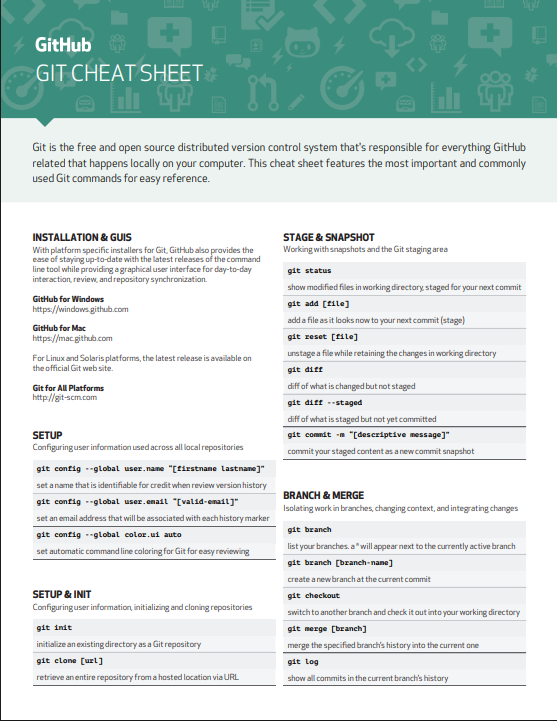
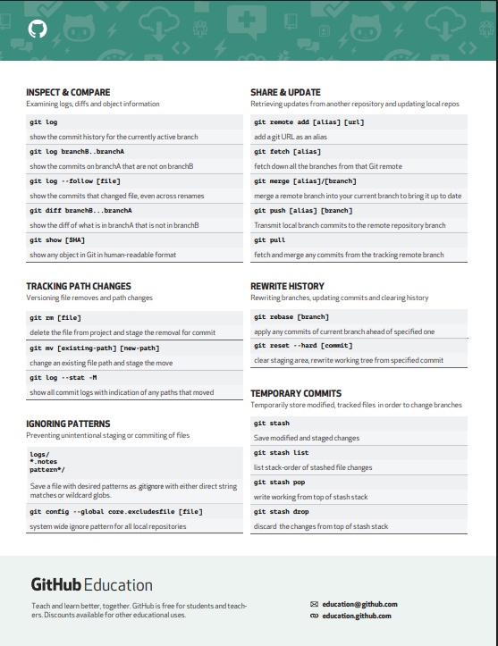

git --version

git initgit add .git commit -m "First commit"git remote add origin https://github.com/SizningIsmingiz/loyihangiz-nomi.git
git branch -M main
git push -u origin main
Ushbu ikkala buyruqni ham terminalga joylab, Enter tugmasini bosing.
git clone https://github.com/SizningIsmingiz/private-team-project.gitgit add .git commit -m "Sherik tomonidan kiritilgan o'zgarishlar"git push origin mainUshbu amaliy mashg'ulotda siz shaxsiy (private) repository bilan ishlash, undan kodni kompyuteringizga yuklab olish (clone), masalalarni yechish, o'zgarishlarni qayta yuklash (push) va shu jarayonda commit izohida ismingizni yozish ko'nikmalarini oshirasiz.
Berilgan sonni tub sonligini tekshirish
Kirish: 7
Natija: true
Massivdagi ikkinchi eng katta sonni topish
Kirish: [3, 5, 7, 2, 8]
Natija: 7
Stringda eng ko'p qatnashgan harfni topish
Kirish: "javascript"
Natija: "a"
Massivdagi barcha juft sonlar yig'indisini hisoblash
Kirish: [1, 2, 3, 4, 5, 6]
Natija: 12
Massivdagi barcha kombinatsiyalarni (subsetlarni) chiqarish
Kirish: [1, 2]
Natija: [[], [1], [2], [1, 2]]
Matndan faqat unli harflarni olib qolish
Kirish: "salom dunyo"
Natija: "aouo"
Izoh: Faqat a, o, u, e, i harflarini qoldiring (katta va kichik harflarni hisobga oling).
Stringdagi barcha raqamlar yig'indisini hisoblash
Kirish: "a1b2c3"
Natija: 6
Massivni aylantirish (rotate)
Kirish: [1, 2, 3, 4, 5], k = 2
Natija: [4, 5, 1, 2, 3]
Izoh: Har bir elementni o'ngga k marta siljiting.
So'zlar sonini hisoblash
Kirish: "Bugun havo juda yaxshi."
Natija: 4
Massivdagi eng kichik sonni topish
Kirish: [8, 3, 5, 1, 9]
Natija: 1
Ushbu amaliy mashg'ulotda siz Object-Oriented Programming (OOP) prinsiplaridan foydalangan holda masalalarni yechasiz va natijalarni shaxsiy (private) repositoryga joylaysiz.
Yakuniy qadamda esa repoga Bekmuhammad-Devoloper akkauntini hamkor (collaborator) sifatida qo'shasiz.
Masala: Foydalanuvchi ma'lumotlarini (ismi, yoshi, paroli) saqlaydigan `User` klassini yarating. Foydalanuvchi yoshini tashqi tomondan to'g'ridan-to'g'ri o'zgartirishning oldini oling.
Talab: `User` klassida `name` va `age` uchun public getter metodlar (masalan, `getName()`, `getAge()`) va faqat `age` uchun private setter metod yaratib, yoshni faqat konstruktor orqali o'rnatishni ta'minlang.
Masala: Avtomobillar haqida ma'lumot saqlaydigan `Car` klassini yarating (`make`, `model`, `year` xususiyatlari bilan). Keyin `ElectricCar` nomli yangi klassni `Car` klassidan voris qilib oling va unga `batteryRange` nomli qo'shimcha xususiyat qo'shing.
Talab: `Car` va `ElectricCar` klasslarini yaratib, har birida ma'lumotlarni konsolga chiqaruvchi metod (masalan, `displayInfo()`) yozing.
Masala: Turli hayvonlar ovozini chiqaradigan tizim yarating.
Talab: `Animal` nomli asosiy klass yarating. Keyin `Dog` va `Cat` klasslarini `Animal`dan voris qilib oling. Har bir klassda `makeSound()` metodini yarating, lekin ularning ichki mantiqi har xil bo'lsin (masalan, it uchun "woof", mushuk uchun "meow" qaytarsin).
Masala: Bank hisoblarini boshqarish uchun tizim yarating.
Talab: `BankAccount` nomli abstrakt klass yarating, uning ichida `deposit(amount)` (pul qo'yish) va `withdraw(amount)` (pul yechish) kabi metodlar mavjud bo'lsin. So'ngra `SavingsAccount` (jamg'arma hisob) klassini `BankAccount`dan voris qilib olib, bu abstrakt metodlarni implementatsiya qiling.